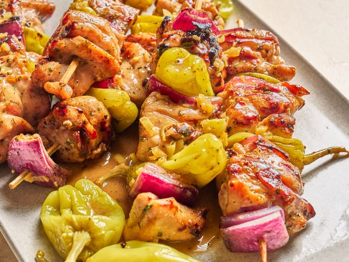

Mississippi Chicken Skewers

Credit: Peyton Beckwith
For these zesty Mississippi chicken skewers,
boneless thigh pieces marinate briefly in ranch seasoning and pepperoncini brine,
then are threaded on skewers with pepperoncini and red onion chunks.
They're seared on a grill pan, then baked, and served with a tangy pepperoncini butter sauce.
- Prep Time: 10 mins
- Cook Time: 30 mins
- Marinate Time: 20 mins
- Total Time: 1 hr
- Servings: 6
Ingredients
- 1 (1 ounce) packet ranch seasoning mix, divided
- 1 (1 ounce) package au jus seasoning mix, divided
- 2 pounds skinless boneless chicken thighs, cut into 2-inch pieces
- 3 tablespoons olive oil
- 15 pepperoncini peppers, divided
- 1/4 cup pepperoncini brine, divided
- 1 red onion, cut into 2-inch pieces
- 6 tablespoons cold butter, divided
- 3/4 cup water
Back to all recipes